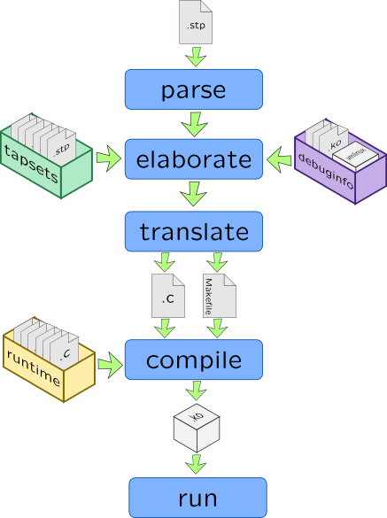

SystemTap
SystemTap is not part of Linux Kernel, so it have to adapt to kernel changes: i.e. sometimes runtime and code-generator have to adapt to new kernel releases. Also, Linux kernels in most distributions are stripped which means that debug information in DWARF format or symbol tables are removed. SystemTap supports DWARF-less tracing, but it has very limited capabilities, so we need to provide DWARF information to it.
Many distributions have separate packages with debug information: packages with -debuginfo suffix on RPM-based distributions, packages with -dbg on Debian-based distributions. They have files that originate from same build the binary came from (it is crucial for SystemTap because it verifies buildid of kernel), but instead of text and data sections they contain debug sections. For example, RHEL need kernel-devel, kernel-debuginfo and kernel-debuginfo-common packages to make SystemTap working. Recent SystemTap versions have stap-prep tool that automatically install kernel debuginfo from appropriate repositories with correct versions.
For vanilla kernels you will need to configure CONFIG_DEBUG_INFO option so debug information will be linked with kernel. You will also need to set CONFIG_KPROBES to allow SystemTap patching kernel code, CONFIG_RELAY and CONFIG_DEBUG_FS to allow transfer information between buffers and consumer and CONFIG_MODULES with CONFIG_MODULE_UNLOAD to provide module facilities. You will also need uncompressed vmlinux file and kernel sources located in /lib/modules/$(uname -r)/build/.
SystemTap doesn't have VM in-kernel (unlike DTrace and KTap), instead it generates kernel module source written in C than builds it, so you will also need a compiler toolchain (make, gcc and ld). Compilation takes five phases: parse, elaborate in which tapsets and debuginfo is linked with script, translate in which C code is generated, compile and run:

SystemTap uses two sets of libraries during compilation process to provide kernel-version independent API for accessing. Tapsets are a helpers that are written in SystemTap language (but some parts may be written in C) and they are plugged during elaborate stage. Runtime is written in C and used during compile stage. Because of high complexity of preparing source code and compiling that, SystemTap is slower than a DTrace. To mitigate that issue, it can cache compiled modules, or even use compile servers.
Unlike DTrace, SystemTap has several front-end tools with different capabilities:
-
stapiois a consumer which runs module and prints information from its buffer to a file or stdout. It is never used directly, but called bystapandstapruntools. -
stap(1)includes all five stages and allow to stop at any of them. I.e. combining options-kand-p 4allow you to create pre-compiled.kokernel module. Note that SystemTap is very strict about version of kernel it was compiled for. -
staprun(1)allows you to reuse precompiled module, instead of start compilation from scratch.
Warning
If stap parent is exited, than killall -9 stap won't finish stapio daemon. You have to signal it with SIGTERM: killall -15 stap
stap
Like many other scripting tools, SystemTap accepts script as command line option or external file, for example:
-
Command-line script is passed with
-eoption# stap -e 'probe syscall.write { printf("%dn", $fd); }' [arguments] -
External file as first argument:
# stap syscalls. [arguments]SystemTap command line arguments may be passed to a script, but it distingushes their types: numerical arguments are accessible with$prefix:$1,$2...$nwhile string arguments have@prefix:@1,@2...@n
Here are some useful stap(1) options:
-
-l PROBESPECaccepts probe specifier withoutprobekeyword (but with wildcards) and prints all matching probe names (more on wildcards in Probes).-Lwill also print probe arguments and their types. For example:# stap -l 'scsi.*' -
-v–- increases verbosity of SystemTap. The more letters you passed, the more diagnostic information will be printed. If only one-vwas passed,stapwill report only finishing of each stage. -
-p STAGE–- ends stap process after STAGE, represented with a number starting with 1 (parse). -
-k–- stap tool won't delete SystemTap temporary files created during compilation (sources and kernel modules kept in/tmp/stapXXXXdirectory), -
-g–- enables Guru-mode, that allows to bind to blacklisted probes and write into kernel memory along with using Embedded C in your scripts. Generally speaking, it allows dangerous actions. -
-c COMMANDand-x PID–- like those in DTrace, they allow to bind SystemTap to a specific process -
-o FILE–- redirects output to a file. If it already exists, SystemTap rewrites it. -
-m NAME–- when compiling a module, give it meaningful name instead ofstap_<gibberish>.
When SystemTap needs to resolve address into a symbol (for example, instruction pointer to a corresponding function name), it doesn't look into libraries or kernel modules. Here are some useful command-line options that enable that:
-
-d MODULEPATH–- enables symbol resolving for a specific library or kernel module. Note that in case it is not provided,stapwill print a warning with corresponding-doption. -
--ldd–- for tracing process –- uselddto add all linked libraries for a resolving. -
--all-modules–- enable resolving for all kernel modules
SystemTap example
Here is sample SystemTap script:
#!/usr/sbin/stap
probe syscall.write
{
if(pid() == target())
printf("Written %d bytes", $count);
}
Save it to test.stp and run like this:
root@host# stap /root/test.stp -c "dd if=/dev/zero of=/dev/null count=1"
Q: Run SystemTap with following options: # stap -vv -k -p4 /root/test.stp , find generated directory in /tmp and look into created C source.
Q: Calculate number of probes in a syscall provider and number of variables provided by syscall.write probe:
# stap -l 'syscall.*' | wc -l # stap -L 'syscall.write'
References